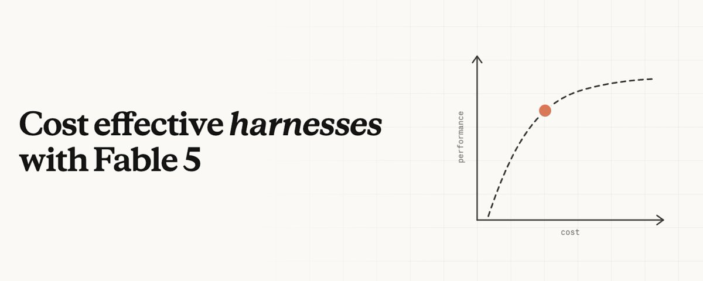
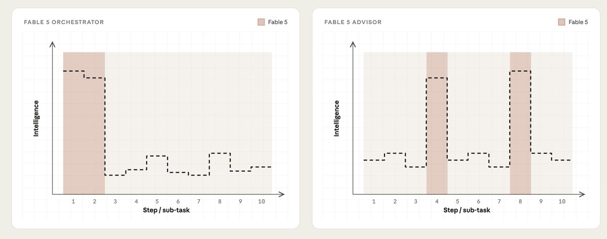
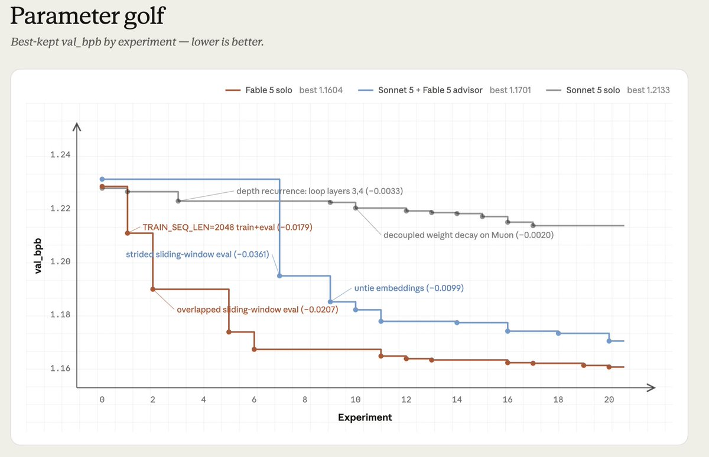
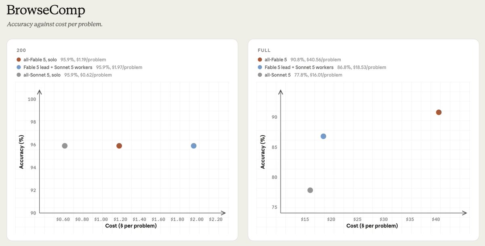

ORCHESTRATOR
先做高质量分解
判断主要发生在开头：前沿模型制定计划、定义子任务，再把大量执行交给低成本 worker。
“便宜 worker + 聪明 lead”听起来天然省钱，但原文的两个实验给出了更严格的答案：先看判断力在任务中怎样分布，再看省下的执行 token 能否覆盖委派与协调成本。

什么时候该让 Fable 5 全程执行，什么时候只让它做 orchestrator、advisor 或 verifier？
按任务的“判断力分布”放置前沿模型：判断集中在开头就编排，散落在过程中就设检查点，集中在结尾就验证。
委派不是免费午餐。任务太小、handoff 太多、worker 重复或 prompt cache 命中率低，混合系统可能反而更贵。
原文最重要的抽象是 intelligence asymmetry：同一个任务内部，不同阶段、不同 token 对判断力的需求并不相同。Harness 的工作，是识别这些不对称并把前沿智能放到关键位置。

判断主要发生在开头：前沿模型制定计划、定义子任务，再把大量执行交给低成本 worker。
新结果不断改变下一步：executor 负责推进，前沿模型在固定或触发式 checkpoint 重新排序方向。
执行可以便宜，但最终结果需要高质量审核：用前沿模型检查完成条件、证据与错误。
Parameter Golf 要求 agent 修改训练代码、启动训练、读取结果，再决定下一次实验。目标是在 8×H100、10 分钟内，训练出能装进 16MB artifact 的最佳模型。结果会持续改变后续实验的价值，因此它天然适合 advisor，而不是一次性规划。

真正有用的不是开场建议。Fable 5 对初始实验的排序与最终有效方向反相关；价值来自中途 checkpoint。Sonnet 5 容易在边际收益上持续 hill-climbing，却不会主动退后一步重新排序，Fable 5 在这里负责 steering 与 reprioritization。
原文比较三种配置：Fable 5 solo、Sonnet 5 + Fable 5 advisor、Sonnet 5 solo。文中的“约 90%”指混合方案相对 Sonnet solo 的损失下降，接近 Fable solo 相对 Sonnet solo 的损失下降；它不是准确率百分比。
即使任务存在 intelligence asymmetry，也不代表拆出去一定划算。人有时自己做更快，模型也一样：每次 handoff 都会复制边界 token，多个 worker 还可能重复搜索；如果 prompt cache 没有延续，成本会进一步放大。
这是依据原文整理的判断式，不是作者给出的正式数学公式。

三种配置准确率都为 95.9%。Fable lead + Sonnet workers 每题 $1.97，而 Fable solo 仅 $1.19：多付约 60% 协调 markup，没有性能收益。
Fable lead + Sonnet workers 达到 Fable solo 约 96% 的分数，只花约 46% 的成本。大量阅读 token 被 worker 吸收，终于覆盖固定 handoff 成本。
原文最后不是给出某个固定架构，而是给 Fable 5 一组元指导：让模型理解自己该在何时使用自己的 intelligence。以下四条保留了作者的顺序与边界。
判断力是集中在开头、散落在过程中，还是主要用于收尾审核？据此选择 orchestrator、advisor 或 verifier。
给 harness 一些 worker 的能力排序或启发式，例如 taste、intelligence 与适用任务，让它不必从零猜测何时调用谁。
确认委派出去的 token 量足以覆盖 handoff。低 $/token 不等于低总成本，因为更强模型可能使用更少 token 完成任务。
把后续调用路由给同一个 worker，让它的 cache 持续积累。每次都生成新 worker，会反复支付上下文写入成本。
先问“高判断力出现在哪里”，再问“可委派 token 的体量够不够大”。第二问决定委派是否回本，第一问决定前沿模型应该以什么角色介入。
别为了架构而拆分；小任务往往不够偿还协调成本。
强模型做分解或验收，低成本 worker 承担大段执行。
如果执行体量不大，checkpoint 本身也可能成为额外负担。
便宜 executor 推进，强模型周期性退后一步重新排序方向。
这是为阅读与应用整理的二维框架，不是原文中的完整策略表。实际系统还需考虑 worker 能力、错误风险、并行重叠和缓存实现。
这篇文章真正反对的是一种粗糙的 routing 直觉：贵模型只做计划、便宜模型只做执行。Parameter Golf 说明判断可能需要散落在过程中；BrowseComp 说明任务规模必须大到足以摊薄协调成本。
好的 harness 不是尽量少用前沿模型，而是让每一次前沿智能的介入，都落在最能改变任务走向的位置。
原文最后再向前走了一步：Claude 可以依据任务即时写出自己的 harness。前面的任务形状、委派先验、协调成本与缓存规则，就是让这种动态编排不只“能工作”，还更可能在总成本上成立。